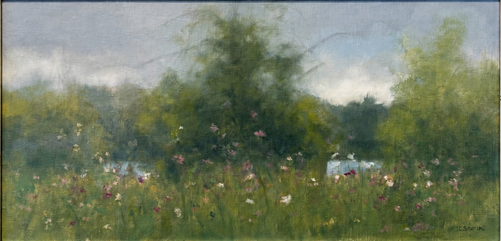

AMBLESIDE ARTIST
Deborah Squier
Pastel · Oil
FEATURED WORK

Deborah Squier
Pastel · Oil
THE ARTIST
Painting the
Appalachian
landscape.
Deborah Squier's painting is rooted in a passionate love and respect for the natural order of things and the mystery of life in all of its manifestations.
Her relationship with landscape began in childhood. As the youngest of four children, Squier regularly accompanied her father on plein air painting outings. While he worked to capture the landscape on canvas, she immersed herself directly in it — roaming, observing and experiencing the natural world around her.
That physical immersion in the landscape became what Squier describes as her apprenticeship and the foundation of her journey as an artist. Somewhere between direct experience and the unknowable mystery of nature lies the source of her inspiration.
Squier describes her work as Post-Impressionist, although she considers the label less important than deepening her direct experience of the landscape and the forces of the earth present within every subject she paints.
Painting on location and working through direct observation deepen her connection to the earth's elements. When she returns to the studio, those sensory experiences continue to guide the painting.
ARTIST'S VISION
“Nature is my most important Muse. I am her apprentice, fully immersed in her beauty.”
— Deborah Squier
THE PROCESS
An endless
apprenticeship.
For Squier, painting requires a lifetime of learning — learning the subject, the materials, the qualities of light and the ways atmosphere transforms the landscape from one day to another.
Her process begins with presence. Painting on location allows direct observation to become a sensory experience of place rather than simply a visual record of it.
In the studio, that experience remains. Memory, atmosphere, observation and material come together as she searches for something beyond a literal depiction of the landscape.
It is this ongoing pursuit of the moment at hand — and the continually changing character of the natural world — that compels her to paint.
SELECTED WORKS
The Collection
Deborah Squier
Deborah Squier
COLLECT